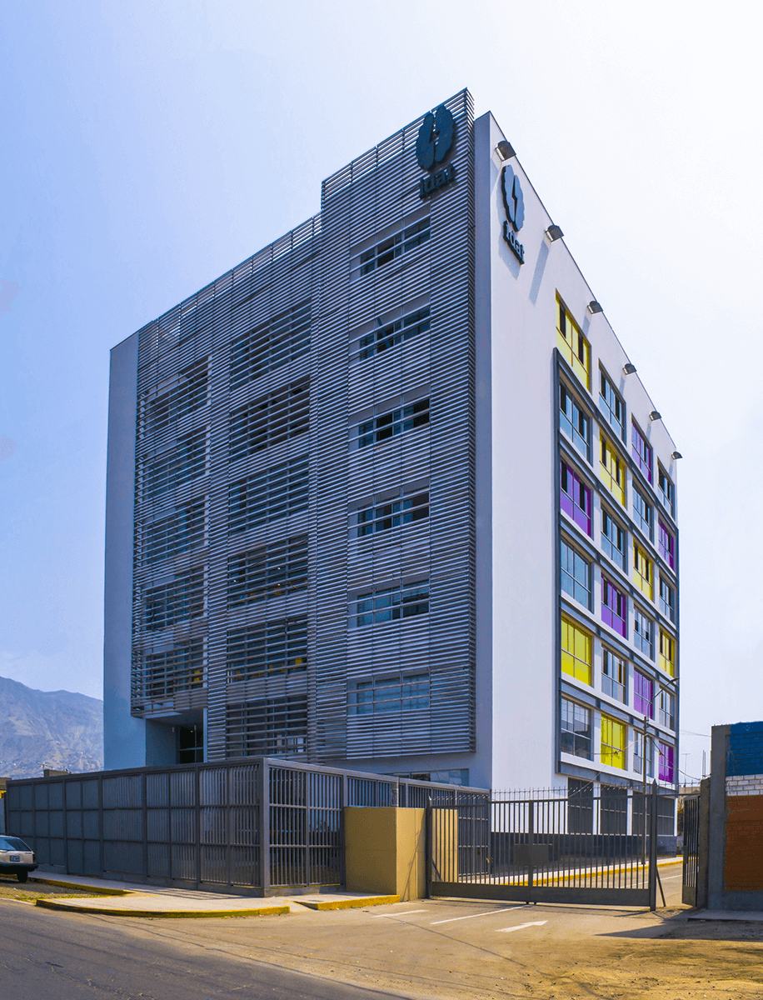

Caracteristicas de la sede:
- Infraestructura moderna
- Profesores capacitados
- Aulas adecuadamente equipadas
- Una enseñanza de calidad
El campus de Idat en San Juan de Lurigancho comenzó sus operaciones en marzo de 2017.Esta sede representó una inversión aproximada de S/20 millones y fue diseñada para atender la alta demanda educativa del distrito más poblado de Lima.
